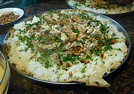

Mansaf Recipe

The Mansaf is a Jordanian Dish Who Does Not Like Mansaf It Contain smthn the Jordanian People Call
"jameed", In the Next Section We ll Give You the Recipe of it
ingredient
- 6 pieces of Lamb
- 1 large yellow onion
- tablespoon Mansaf Spice Blend
- 3 Bay Leaves
- 6 whole cardamom pods,
- 1 ball of jameed (dried yogurt)
- 32 ounce plain kefir
Steps To Prepare It :
- COOK THE LAMB TO GET MANSAF BROTH
- MAKE THE JAMEED (YOGURT SOUP)
- MAKE THE RICE
- serve Mansaf, the Jordanian way!